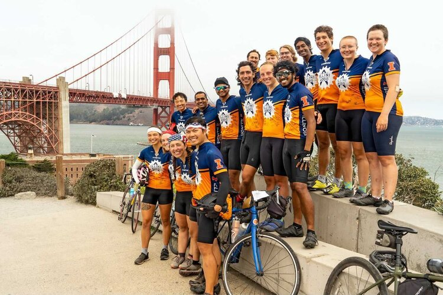
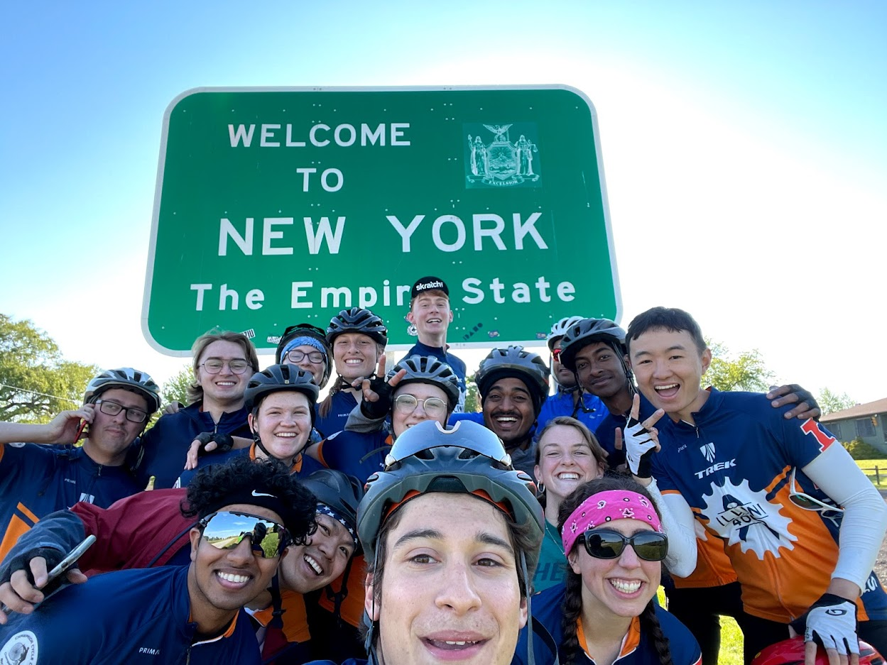
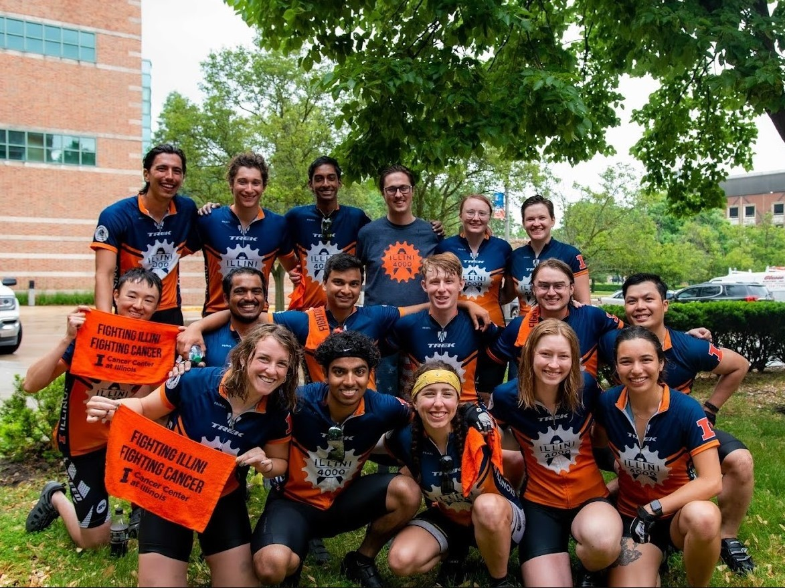
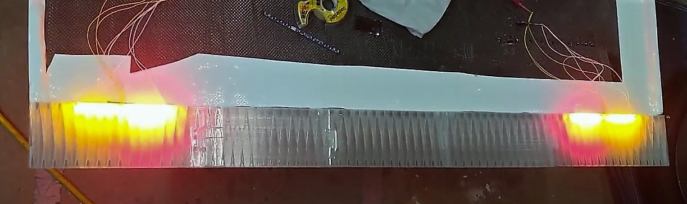
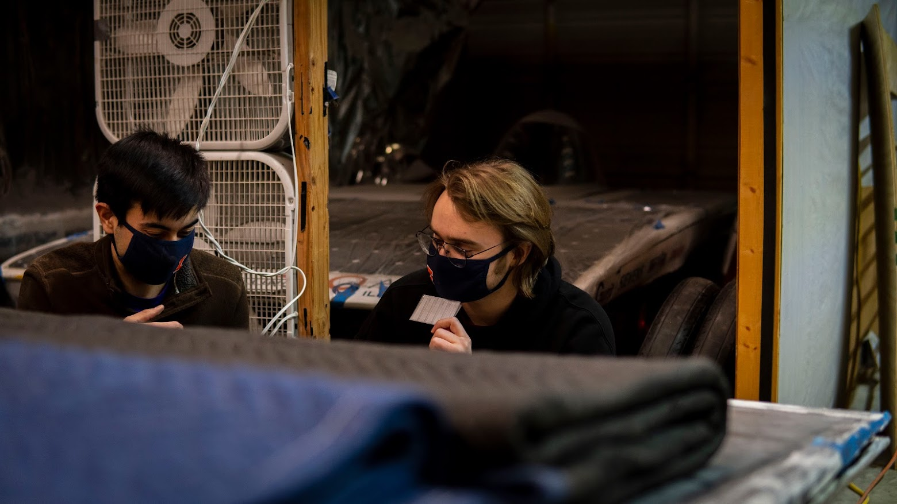
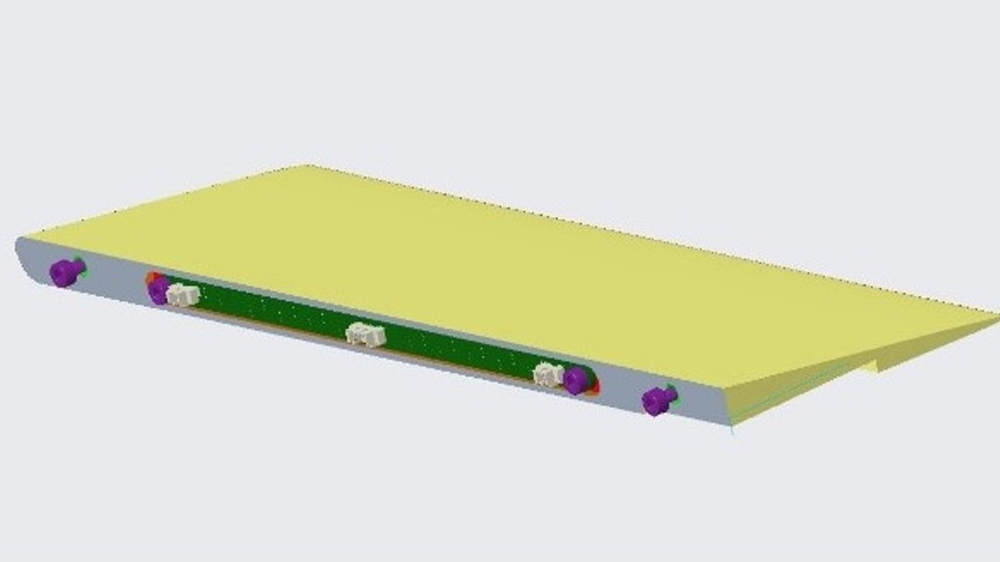
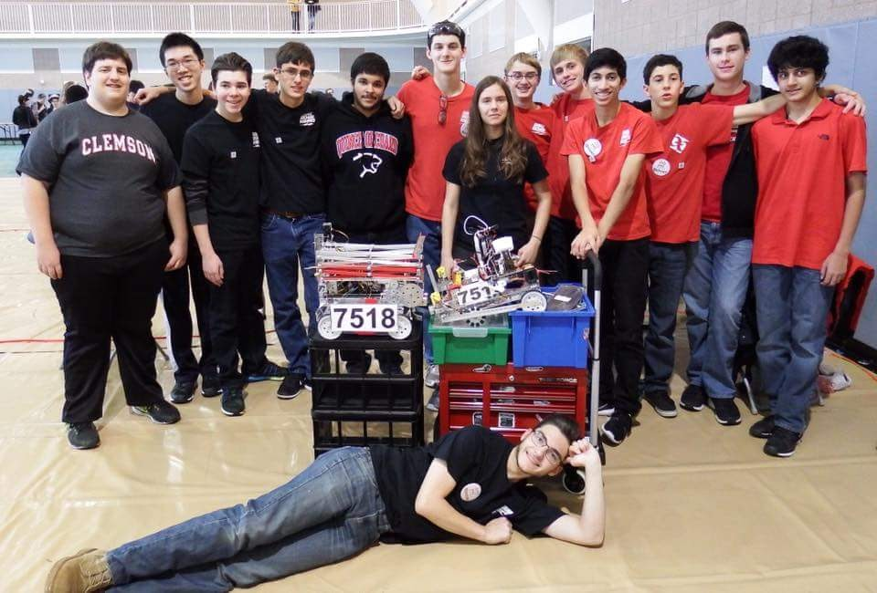
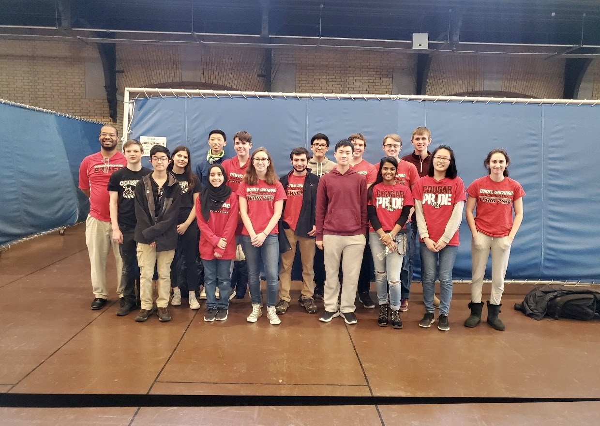

That's me in the picture. Also, that's my cat, Pumpkin. Don't worry, he's not bad luck.
----- ----- -----
I am currently an undergraduate student at UIUC studying Electrical Engineering! I am interested in pursuing a career path in Aerospace, such as satelites, control systems, robotic equipment, and more. I also very much enjoy Mechanical design, and wish to combine this with Electrical design in my future, like with Mechatronics.
While Engineering is my passion, I also love biking, playing video games, exploring the outdoors, collecting cool stuff, and building/launching model rockets. I also enjoy 3D Printing and designing models using CAD.
College
Illini 4000: An organization dedicated to fighting cancer on two wheels. Teams annually complete cross-country bike trips, from New York City to San Francisco, to advocate cancer research and services by interviewing those who have been affected by cancer
- a project called the Portraits Project. Furthermore, each rider is required to fundraise at least $4,000 to be donated to cancer related organizations. I was a rider on the 2020 and 2021 Bike America Team, where the 2020 ride was cancelled, but the
2021 team successfully made the 4,900 mile trek! I am also a Logistics Officer, where I will help in route planning, stayovers, team lifestyle, and other logistical tasks.
While I am not a Team Bike America rider anymore, the battle with cancer continues on. Please donate here.

We made it! After 78 days, the Illini 4000 2021 Bike America Team made it to San Francisco.

At the NY-PA state line.

Representing the Cancer Center of Illinois at UIUC.
Illini Solar Car: A massive student led project that "designs, builds, and races solar electric race cars in international
competitions." I am currently a member on the Mechanical Team, in which I have worked on the Trailing Edge of the car, which houses the rear turn and brake lights, enclosures to house electrical components,
vast amounts of 3D Printing and CNC operation, and other, more general work. I am currently the Melec Co-Lead, where I help to facilitiate the designing and manufacturing of projects
that involve mechanical and electrical components, such as front and rear lights, enclsoures, the dashboard, and more. I was also the OpenLab Representative, where I was a voice for the team, and worked to secure space and equipment.
I have learned Creo (a CAD software), teamwork, and other skills, and am looking forward to combining my interest in Mechanical and Electrical design even more in the future with Illini Solar Car.

The Trailing Edge on the rear of the car.

Discussing the rear shell of Brizo.

Parameterized CAD so different enclosures can be made easily.
High School
Quince Orchard Engineering and Robotics Club (QOERC): QOERC partakes in the First Tech Challenge, which is an annual competiton where young engineers must construct robots to solve various problems, document progress with Engineering Notebooks, and inspire others with outreach events. I was the 3D Printer manager for two years, and Vice President for one. I now serve as a Mentor - I provide advice, support, and guidance for the club. This is currently my fifth year with the club.

QOERC 2016-2017 team at the Georgetown Qualifier.

QOERC 2019-2020 team at the Annapolis Qualifier.
Orbital Solutions: Led by myself and another friend, Orbital Solutions comprised of 10 "junior" engineers who were excited to learn more about robotics. We competed in the First Lego League, which is an annual competition where teams build LEGO robots to complete tasks autonomously. This was a great learning experience for me in leadership and how to work with a younger audience.
Orbital Solutions 2018-2019 team at the Shady Grove Qualifier.